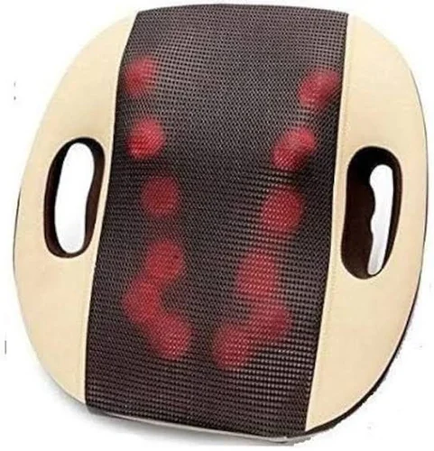
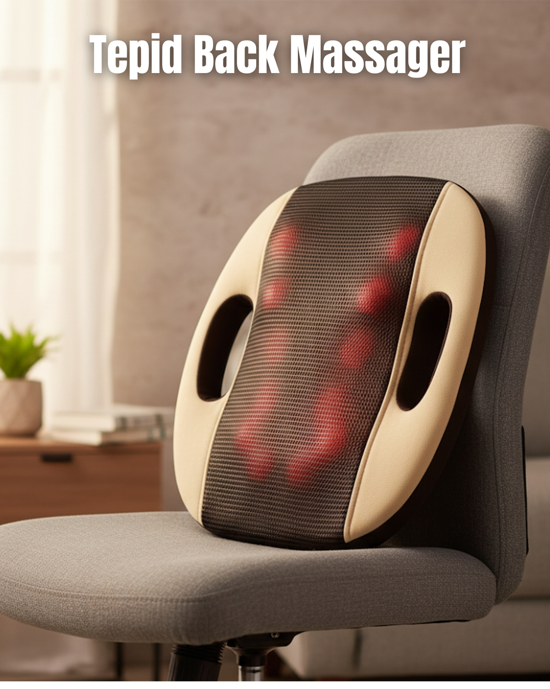

Back Massager
The Tepid Back Massager is a portable, powered massage cushion engineered to deliver targeted Shiatsu kneading and gentle heat to relieve tension in the upper and lower back, neck, waist, shoulders and even buttocks and thighs. Equipped with 12 deep-kneeiding nodes, the device adapts to your body contours and intensity improves naturally based on pressure applied. Designed for ease of use at home, in the office, or even in your car, it combines massage and warmth to soothe sore muscles, boost circulation and promote relaxation. An ergonomic, breathable mesh design and lightweight form factor make it easily transportable. Its automatic shut-off after roughly 15 minutes ensures safe operation.
Enquire Now